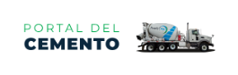

<!--
  Generated template for the ApiuxPage page.

  See http://ionicframework.com/docs/components/#navigation for more info on
  Ionic pages and navigation.
-->
<ion-header>

  <!-- <ion-navbar>
   <ion-title>Cementos BIO BIO</ion-title>
   <button ion-button menuToggle>
     <ion-icon name="menu"></ion-icon>
     </button>
   </ion-navbar> -->
 </ion-header>
 
 <ion-content padding class="base" no-bounce>
 
   <div class="row">
     <div class="col-md-12">
       <div class="col-md-10 offset-md-1 login">
         <div class="row">
           <div class="col-md-12" style="text-align: center;">
             
           </div>
           <div class=" col-md-12 login-input">
             <div class="offset-md-1 col-md-10">
               <input type="text" class="form-control input" placeholder="Usuario">
             </div>
             <br>
             <div class=" offset-md-1 col-md-10">
               <input type="password" class="form-control input" placeholder="Contraseña">
             </div>
             <br>
             <div class=" offset-md-1 col-md-10" style="text-align: center;">
               <a class="form-control botonLogin" on-click="goToPrincipal()">Iniciar sesión</a>
             </div>
             <br>
             <div class=" offset-md-1 col-md-10" style="text-align: center;">
               <a class="olvido">¿Olvidaste tu contraseña? </a><p style="display: inline-block;">&nbsp;&nbsp;|&nbsp;&nbsp;</p><a class="olvido"> ¿Olvidaste tu usuario?</a>
             </div>
           </div>
         </div>
       </div>
     </div>
   </div>
 </ion-content>